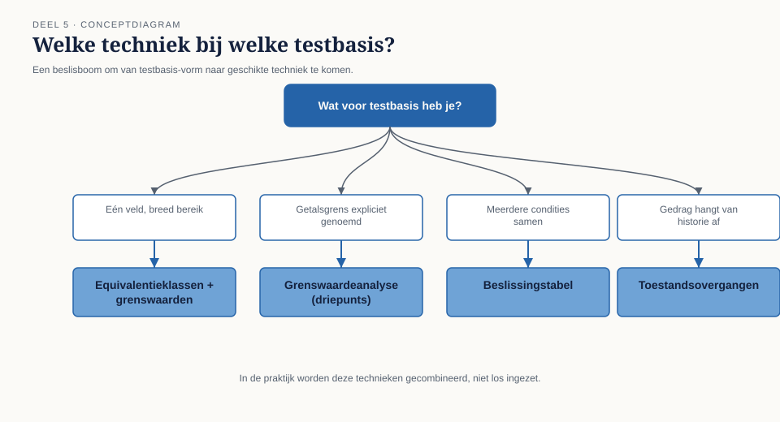

Deel 5 — Black-boxtechnieken
Reader · Ductus-cursus Testen en Kwaliteitsborging · niveau 1 (fundament) · deel 5 van 30
Dit deel sluit bevinding T6: de testdata van WGP 2.0 bevatte geen terugwerkende kracht, geen deeltijdwijziging halverwege de maand, geen dubbel dienstverband en geen achternaam met een apostrof.
Leerdoelen
Na dit deel kun je:
- uitleggen wat black-boxtechnieken zijn en waarom zij niet naar de interne structuur kijken;
- equivalentieklassen identificeren en toepassen, inclusief geldige én ongeldige klassen;
- grenswaardeanalyse toepassen, met het onderscheid tussen twee- en driepuntsgrenzen;
- beslissingstabellen opstellen en gebruiken om combinaties van condities te testen;
- toestandsovergangen modelleren en daaruit testgevallen afleiden;
- beargumenteren waarom black-boxtechnieken systematisch meer vinden dan intuïtief gekozen testgevallen;
- de gekozen techniek verantwoorden aan de hand van het soort testbasis dat voorhanden is.
Studielast: één dagdeel klassikaal, circa drie-en-een-half uur zelfstudie (dit deel bevat meer oefenstof dan gemiddeld).
1. De namen die niemand had ingevoerd
Bij de reconstructie na de mislukte livegang viel Astrid Poelman iets op in de testdataset van WGP 2.0: alle 47 fictieve werknemers in de testomgeving hadden een gewone, korte achternaam. Geen enkele met een apostrof, een koppelteken, een spatie of een diakritisch teken. Geen enkele met twee voornamen. Geen enkele met een dienstverband dat op twee plekken tegelijk liep.
Dat is op zichzelf geen ramp — totdat je beseft dat dit precies het soort gegevens is waarmee het echte personeelsbestand van 4.100 werkgevers wél gevuld is, en dat verwerkingslogica die uitgaat van "een naam is een simpele tekenreeks" op zulke namen breekt op manieren die niemand van tevoren bedenkt als hij alleen intuïtief testgevallen kiest.
Nog opvallender: geen van de testgevallen behandelde een deeltijdwijziging die inging op een andere dag dan de eerste of de vijftiende van de maand. Niet omdat iemand besloot dat dat onbelangrijk was — er was domweg nooit een systematische manier gebruikt om te bepalen wélke datums het proberen waard waren.

Kernzin — Testgevallen die je intuïtief bedenkt, testen vooral het geval waar je toevallig aan denkt. Systematische technieken dwingen je de gevallen te testen waaraan je niet vanzelf denkt.
Dit is bevinding T6. Dit deel behandelt de vier belangrijkste black-boxtechnieken die haar hadden voorkomen.
2. Wat black-boxtechnieken zijn
Black-boxtechnieken leiden testgevallen af uit de testbasis — eisen, specificaties, gedrag — zonder te kijken naar hoe het systeem intern is gebouwd. De tester test wat het systeem behoort te doen, gezien vanuit de gebruiker of vanuit de eis, niet hoe het van binnen is gecodeerd.
Dit is het tegenovergestelde uitgangspunt van white-boxtechnieken (deel 6), die juist wél de interne structuur als vertrekpunt nemen. Beide zijn systematisch — het onderscheid zit niet in "gestructureerd versus intuïtief" maar in "vanuit gedrag versus vanuit structuur".
Het gemeenschappelijke doel van alle vier de technieken in dit deel: van een oneindige of onhandelbaar grote verzameling mogelijke testgevallen (principe 2, uitputtend testen is onmogelijk) een kleine, doordachte selectie maken die verhoudingsgewijs veel vindt.
3. Equivalentieklassenanalyse
3.1 Het idee
Verdeel de mogelijke invoerwaarden in groepen (klassen) waarvan je aanneemt dat het systeem elk lid van de groep op dezelfde manier behandelt. Test één representant per klasse in plaats van elke mogelijke waarde.
Onderscheid twee soorten klassen:
- Geldige equivalentieklassen — invoer die het systeem behoort te accepteren.
- Ongeldige equivalentieklassen — invoer die het systeem behoort af te wijzen.
Beide horen getest te worden. WGP 2.0 testte vrijwel uitsluitend geldige klassen.
3.2 Toegepast op de casus
Voor het veld "fte-percentage bij een deeltijdwijziging", met de regel dat dit percentage tussen 0,1 en 1,0 moet liggen, in stappen van 0,1:
| Klasse | Type | Voorbeeldwaarde |
|---|---|---|
| Kleiner dan 0,1 | ongeldig | 0,0 of negatief |
| 0,1 tot en met 1,0, in juiste stappen | geldig | 0,6 |
| Groter dan 1,0 | ongeldig | 1,2 |
| Niet in stappen van 0,1 | ongeldig | 0,63 |
| Geen numerieke waarde | ongeldig | leeg veld, tekst |

Vijf testgevallen dekken hiermee — met een redelijke aanname over homogeen gedrag binnen elke klasse — het volledige waardebereik. Dat is de kracht van de techniek: van een in theorie oneindig aantal mogelijke invoerwaarden naar vijf betekenisvolle testgevallen.
3.3 De achilleshiel: de aanname van homogeniteit
Equivalentieklassenanalyse rust op de aanname dat het systeem alle waarden binnen een klasse identiek behandelt. Die aanname is precies waar de techniek kan mislukken, en de reden dat zij zelden alleen wordt ingezet. Ze is bij uitstek geschikt om het waardebereik grof in te delen; de randen van elke klasse verdienen een aparte, scherpere techniek.
4. Grenswaardeanalyse
4.1 Het idee
Fouten concentreren zich vaker op de grenzen tussen equivalentieklassen dan in het midden ervan — een > die ≥ had moeten zijn, een afronding die net verkeerd uitpakt, een datum die "vandaag" anders behandelt dan "morgen". Grenswaardeanalyse test daarom expliciet de randen.
4.2 Twee- en driepuntsgrenzen
Tweepuntsgrenzen: test de grenswaarde zelf en de eerstvolgende waarde net erbuiten.
Driepuntsgrenzen: test de grenswaarde zelf, plus de waarde net eronder én de waarde net erboven — preciezer, met name bij discrete (telbare) waarden waar "net erbuiten" op twee manieren kan worden ingevuld.
Toegepast op het fte-percentage (geldig: 0,1 tot en met 1,0):
| Grens | Driepuntswaarden |
|---|---|
| Ondergrens 0,1 | 0,0 — 0,1 — 0,2 |
| Bovengrens 1,0 | 0,9 — 1,0 — 1,1 |

4.3 De grens die WGP 2.0 miste
De regel voor terugwerkende kracht in het (uiteindelijk herstelde) ontwerp luidde: mutaties tot 24 maanden terug worden verwerkt. De testset bevatte geen enkel geval rond die grens — geen 23, geen 24, geen 25 maanden terug. Belangrijker nog: er was geen testgeval rond de grens tussen "deze maand" en "vorige maand", precies het gebied waar de tegenstrijdigheid uit deel 4 toesloeg.
Kernzin — Waar een regel een getal noemt, ligt er een grens. Waar een grens ligt, verdient zij minstens drie testgevallen: erop, eronder, erboven.
Grenswaardeanalyse is vaak effectiever dan een grotere equivalentieklassenset, omdat afwijkingen zich daadwerkelijk clusteren rond grenzen (principe 4, deel 1) — niet gelijkmatig over de hele klasse.
5. Beslissingstabellen
5.1 Het idee
Waar equivalentieklassen en grenswaarden vooral geschikt zijn voor één variabele tegelijk, worden beslissingstabellen onmisbaar zodra meerdere condities in combinatie het resultaat bepalen. Een beslissingstabel legt elke combinatie van condities systematisch vast, met het bijbehorende resultaat — en dwingt daarmee combinaties zichtbaar te maken die anders onopgemerkt blijven.
5.2 Toegepast op de casus
Drie condities bepalen samen hoe een salarismutatie wordt verwerkt: (1) ligt de ingangsdatum in het verleden, heden of de toekomst; (2) is de werkgever een verzekerde regeling of een fondsdeelnemer; (3) overschrijdt de wijziging een vooraf ingesteld plausibiliteitspercentage.
| Regel | Verleden/heden/toekomst | Verzekerd/fonds | Plausibel? | Resultaat |
|---|---|---|---|---|
| 1 | verleden | verzekerd | ja | direct verwerken, met terugwerkende correctie |
| 2 | verleden | fonds | ja | doorsturen naar fondsbeheerder ter controle |
| 3 | verleden | verzekerd | nee | blokkeren, handmatige controle |
| 4 | verleden | fonds | nee | blokkeren, handmatige controle |
| 5 | heden/toekomst | verzekerd | ja | direct verwerken |
| 6 | heden/toekomst | fonds | ja | direct verwerken |
| 7 | heden/toekomst | verzekerd | nee | blokkeren, handmatige controle |
| 8 | heden/toekomst | fonds | nee | blokkeren, handmatige controle |

Van deze acht regels waren er bij WGP 2.0 twee getest — beide uit de kolom "heden/toekomst". Geen enkele combinatie met "verleden" was aan bod gekomen, wat rechtstreeks aansluit bij bevinding T2 (dekking niet gewogen naar risico, deel 7) en T6.
5.3 De tabel opschonen
Een volledige tabel bevat 2ⁿ regels bij n binaire condities — bij drie condities met elk twee of drie mogelijke waarden loopt dit snel op. Twee manieren om dit hanteerbaar te houden: condities samenvoegen wanneer bepaalde combinaties feitelijk onmogelijk zijn (bijvoorbeeld: een fondsdeelnemer kan nooit een bepaalde regeling hebben), en regels samenvoegen wanneer het resultaat voor twee combinaties identiek is en dat identiek-zijn inhoudelijk verdedigbaar is — niet omdat het toevallig zo uitkomt.
6. Toestandsovergangen
6.1 Het idee
Sommige systeemonderdelen gedragen zich afhankelijk van een toestand: dezelfde invoer levert een ander resultaat op, afhankelijk van waar het systeem zich al bevindt. Toestandsovergangstechnieken modelleren de toestanden, de gebeurtenissen die van de ene naar de andere toestand leiden, en — het belangrijkste voor testen — welke overgangen wél en welke niet zijn toegestaan.
6.2 Toegepast op de casus
Een mutatieverzoek doorloopt bij Meridiaan de toestanden: ingediend → in behandeling → geaccepteerd → doorgezet → verwerkt, met alternatieve paden naar geblokkeerd en afgewezen.

Twee soorten testgevallen volgen hieruit:
- Geldige overgangen: elke pijl in het diagram minstens één keer doorlopen.
- Ongeldige overgangen: proberen een overgang te forceren die niet in het diagram staat — bijvoorbeeld een "verwerkt"-mutatie opnieuw naar "in behandeling" zetten. Precies dit soort testgevallen ontbrak structureel in WGP 2.0: niemand had onderzocht wat het systeem doet als een mutatie in een toestand terechtkomt die het proces niet voorziet, zoals een mutatie die is doorgezet naar de kernadministratie maar daar nooit is bevestigd — de exacte plek waar de storing zich manifesteerde. Er bestond in het diagram geen toestand voor "doorgezet, nog niet bevestigd, en dat blijft zo", en dus ook geen testgeval dat die situatie opzocht.
Kernzin — Een systeem dat alleen getest is op zijn bedoelde paden, is nooit getest op wat er gebeurt als het tussen twee toestanden blijft hangen. Dat is precies waar productie-incidenten wonen.
7. Welke techniek wanneer?
Geen van deze vier technieken vervangt de andere; ze beantwoorden verschillende vragen.
| Techniek | Beste voor | Minder geschikt voor |
|---|---|---|
| Equivalentieklassen | een enkel veld met een breed waardebereik grof indelen | combinaties van meerdere velden |
| Grenswaarden | scherpe randen van een klasse | gedrag dat niet aan een getal hangt |
| Beslissingstabellen | meerdere condities die samen het resultaat bepalen | een enkel, ongecombineerd veld |
| Toestandsovergangen | gedrag dat afhangt van eerdere gebeurtenissen | statische, toestandsloze functionaliteit |

In de praktijk worden deze technieken gecombineerd. De acht regels van de beslissingstabel in §5.2 kunnen elk weer met grenswaardeanalyse worden verfijnd op de plausibiliteitsgrens; toestandsovergangen bepalen wélke volgorde van mutaties je test, equivalentieklassen bepalen welke waarden je daarbinnen kiest.
8. TMAP-lens
Hoe heet dit daar. Dezelfde technieken worden in TMAP onder testontwerptechnieken behandeld, met een sterke nadruk op combinatorisch testen (pairwise) als aanvulling — vooral relevant zodra het aantal condities toeneemt. ↗ deel 13 (niveau 2) behandelt pairwise-technieken volledig.
Waar het werkelijk anders is. TMAP benadrukt sterker de koppeling tussen testontwerptechniek en risico: niet elke conditie krijgt evenveel aandacht, en de keuze van techniek en diepgang wordt expliciet afgeleid uit de productrisicoanalyse. In deze cursus komt die koppeling volledig aan bod in deel 7; hier ligt de nadruk op de technieken zelf.
9. Examenaansluiting
Dit deel dekt CTFL v4.0, hoofdstuk 4 (deel black-box): equivalentieklassenanalyse, grenswaardeanalyse, beslissingstabellen, toestandsovergangen. Overwegend K3: toepassen op een gegeven scenario.
Veelgemaakte examenfouten:
- Alleen geldige equivalentieklassen benoemen. Het examen vraagt vrijwel altijd ook naar ongeldige klassen.
- Tweepunts- en driepuntsgrenzen verwisselen, of vergeten dat bij discrete waarden "net erbuiten" op twee manieren kan.
- Een beslissingstabel niet volledig maken — een regel vergeten is de meest gemaakte examenfout bij dit onderwerp, en precies de fout die in de casus zelf plaatsvond.
- Toegestane en niet-toegestane overgangen door elkaar halen bij toestandsovergangen.
Deze cursus bereidt voor op het examen en vervangt het officiële examenmateriaal niet.
10. Kruisverwijzingen
- ↗ BPMN/DMN: een DMN-beslistabel is vrijwel kant-en-klare testbasis voor een beslissingstabeltechniek — de vertaalslag is minimaal.
- ↗ Business-analyse: hoe je condities en resultaten uit een eis correct isoleert.
- ↗ Requirements engineering (in ontwikkeling): toetsbaarheid van eisen als voorwaarde voor elke techniek in dit deel.
Kernbegrippen
black-boxtechniek · equivalentieklasse (geldig/ongeldig) · grenswaardeanalyse · tweepunts- en driepuntsgrenzen · beslissingstabel · conditie en resultaat · toestandsovergang · toegestane en niet-toegestane overgang
Samenvatting in vijf zinnen
- Black-boxtechnieken leiden testgevallen af uit gedrag en eisen, niet uit interne structuur, en maken van een onhandelbare hoeveelheid mogelijke gevallen een doordachte selectie.
- Equivalentieklassen delen het waardebereik grof in, met zowel geldige als ongeldige klassen; hun zwakte is de aanname dat elke waarde binnen een klasse zich hetzelfde gedraagt.
- Grenswaardeanalyse test expliciet de randen van een klasse, omdat afwijkingen zich daar vaker concentreren dan in het midden.
- Beslissingstabellen maken combinaties van condities zichtbaar die je met één techniek per veld nooit zou vinden, en een vergeten regel is de meest gemaakte fout.
- Toestandsovergangen testen niet alleen de bedoelde paden maar ook wat er gebeurt als een systeem tussen twee toestanden blijft hangen — precies waar productie-incidenten wonen.